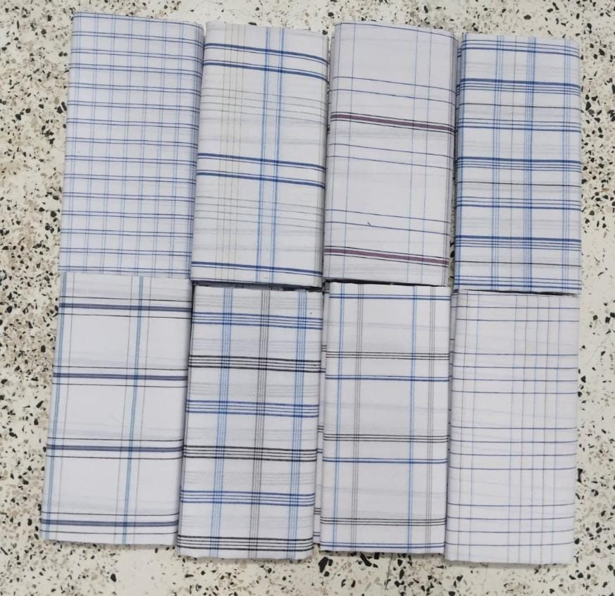

White checked appearance
A predominantly white background with understated intersecting blue, grey and darker lines.
A clean white foundation, fine intersecting lines and blue-to-grey check variations: explore a photographed lungi style and start a practical sourcing conversation.

The collection photograph shows multiple folded white lungis with narrow and broad checked lines. Pattern spacing and line colour vary between the displayed pieces, giving buyers useful visual references when explaining their preference.
A predominantly white background with understated intersecting blue, grey and darker lines.
The photographed pieces show different check densities and stripe arrangements. Ask which design can be sourced.
Share the pattern you prefer, together with the quantity and destination, to start a clearer discussion.
A photograph is a design reference, not a guarantee of fabric composition, stock or commercial terms. Ask our wholesale team to confirm the specifics that matter to your business.
Retailers, wholesalers, distributors and textile traders can share a preferred design, approximate quantity and destination. We manufacture lungis ourselves in Podaturpet, with a focus on quality and reasonable wholesale prices.
Send a white checked lungi enquiry| Design reference | PT-WC-01 |
|---|---|
| Photographed colours | White, blue and grey |
| Pattern | Fine woven checks |
| Fabric | Ask for confirmation |
| Finished size | Ask for confirmation |
| Minimum order | Ask for confirmation |
| Packing | Ask for confirmation |
| Samples | Ask for confirmation |
| Dispatch estimate | Ask for confirmation |
Photographs identify the design. Confirm the sample and written order details before purchase.
Ask about this designUse reference PT-WC-01 to request fabric composition, finished size, minimum quantity and sample costs together. Ask for the current specification and a written quotation before ordering.